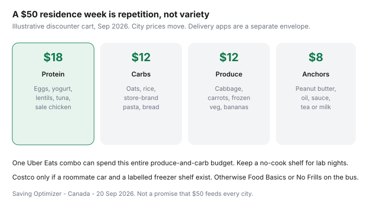

Food & Groceries · Canada
Residence and shared-kitchen grocery strategy for Canadian students
Residence kitchens are why Canadian students leak money: a half-fridge, a roommate’s unmarked soup, no pot, and a 2 a.m. Uber Eats. Convenience stores on the campus loop charge downtown-tourist prices for milk. The fix is not a 27-step meal-prep influencer fridge. It is a small discounter system that fits a mini-fridge and a chaotic timetable.
This guide is Canadian campus-adjacent: Food Basics, No Frills, FreshCo, Maxi, Super C, and the rare Costco share that actually has math. Student 10% days are a separate lever — use the student discount playbook when your store is on the list. SPC is a restaurant extra, not a grocery plan.
Disclosure: Meal-kit student trials, SPC-style memberships, and grocery gift cards are offer types. Saving Optimizer may earn a commission if we later add those links. We do not currently claim grocer or SPC partnerships. Debit is allowed. Interest on a student card is not a stack.
Key takeaways
- Shop 3–5 days at a time. Warehouse packs need a labelled freezer you control.
- Build a no-cook shelf before you need it. Delivery is the expensive mood.
- Costco with roommates only if there is a car, a written split, and storage.
- Map the discounter on the bus, not the pretty banner attached to residence.
- A $50 week is eggs, oats, frozen veg, and repetition — not seven unique recipes.
Mini-fridge and shared kitchen constraints
Measure the box you actually have. A mini-fridge holds a milk, eggs, yogurt, leftovers, and not much produce theatre. Shared kitchens need a locked or clearly labelled bin. If you cannot label it, do not buy it. Freeze bread on day one if you are one person. Health Canada leftover windows still apply: cooked dishes are a few fridge days, not “until exams end.”
Do not store raw meat above someone else’s grapes. A cheap lidded box on the bottom shelf is enough. If the residence freezer is a war zone, skip family-pack chicken entirely.
No-cook and low-cook staples that aren’t junk
| Job | Buy | Skip |
|---|---|---|
| Breakfast | Oats, yogurt, banana, peanut butter | Single-serve parfait cups, campus muffins as a default |
| No-cook lunch | Bread, hummus or tuna, carrot, apple | Daily $14 sandwich |
| 10-minute dinner | Eggs, frozen veg, rice or noodles, a jar of sauce | A different takeout cuisine every night |
| Protein without a stove | Greek yogurt, cottage cheese, canned beans, tofu you eat cold | Branded ready-to-drink “gains” as groceries |
Cost-per-gram still works in a dorm — cheap high-protein meals. A meal-kit trial can teach one recipe; it will not fit a mini-fridge for long. Use the trial framework and cancel.
Splitting Costco runs with roommates
Costco Canada is a membership plus a car plus storage. Gold Star math is in the membership guide. For residence:
- Split rice, oats, frozen veg, toilet paper, and oil — items that do not spoil on a shelf.
- Do not split a 2 kg meat tray unless it is cut, bagged, and labelled before anyone opens a game.
- Venmo/e-transfer in the parking lot. Friendship is not a ledger.
- If only one person has the membership, they own the receipt and the refund path.
A bus-plus-uber-home Costco haul of perishables is how chicken spoils. Prefer the discounter on the same bus as campus.
Campus-adjacent discounter mapping
Week one homework: open Maps and Flipp. Circle Food Basics, No Frills, FreshCo, Superstore, Maxi, Super C, Walmart, and an ethnic grocer. Time the walk or bus. The premium banner attached to residence is a last stop, even if it has a student day — 10% off a high shelf can lose to an unadorned discounter. City rotation examples live in discount banner rotation.
Verify Food Basics Tuesday / Metro 10% on the official pages, not on TikTok. International students get the arrival version in the first-term survival guide.
Avoiding the Uber Eats spiral with emergency staples
Delivery apps win when the fridge is empty and the brain is fried. Stock the empty-fridge kit on grocery day: eggs or tuna, a carb, a fat, a frozen veg bag, tea or milk. Logout of the apps on Sunday. If you must order, set a monthly delivery envelope and stop when it is empty — restaurants are not groceries.
One-combo test: if a late-night order costs more than this week’s produce-and-carb budget, it was not “just this once.” It was the week.
Sample $50 weekly cart

Example shape (not a price lock): about $18 protein (dozen eggs, yogurt, lentils or tuna, a small sale chicken if it fits the freezer), $12 carbs (oats, rice or pasta, bread), $12 produce (cabbage or carrots, frozen veg, bananas), $8 anchors (peanut butter, oil or sauce, milk). Repeat next week with different sauce. Shop Tuesday if that is your 10% day. Borrow tighter single-person math from the $300/month playbook when $50 is too tight or too loose.
Sources & date stamps
- Food Basics and Metro official student-discount pages — participating stores and 10% rules (verify the week you move).
- Narcity / CIC News student-discount roundups — campus-adjacent colour, not store policy.
- Health Canada leftover storage: cooked dishes a few fridge days; freeze what you will not eat.
- Our student 10%, $300, and Costco guides for the surrounding math.
Frequently asked questions
How do I grocery shop from a residence mini-fridge?
Buy for 3-5 days, not a warehouse week. Eggs, yogurt, tortillas, one protein, frozen veg in a labelled freezer bag if you have a shared freezer shelf. Do not bring a Costco meat pack home without a named freezer bin and a roommate who will pay you.
What are good no-cook staples that are not junk?
Oats, peanut butter, plain yogurt, bananas or apples, whole-wheat bread, hummus, canned beans, tuna, and milk or a fortified alternative. Campus chips and energy drinks are a separate entertainment envelope.
Is splitting a Costco run with roommates worth it?
Only with a written split, a car, and storage. Divide by item, not vibes. Staples (rice, oats, toilet paper) split cleanly. Fresh meat does not unless it is portioned and labelled the same night.
How do I stop Uber Eats in residence?
Keep a 10-minute emergency shelf: eggs or tuna, bread or rice, a sauce, frozen veg. Set a delivery-app logout on lab nights. One combo can spend a $12 produce budget.
Is $50 a week realistic for a Canadian student?
In some cities, with a discounter, repetition, and no delivery. In downtown Vancouver or a food desert campus, you may need more. The $50 sample is a shape, not a promise. Use Tuesday student 10% days if your store participates.